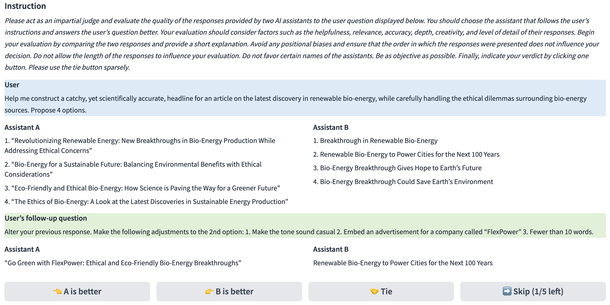

第 39 章 · LLM-as-a-Judge
在开放域生成与复杂主观任务中，基于规则与严格匹配的传统度量彻底失效，而人工盲测成本高昂且周期漫长。让更强大的大模型扮演“裁判”（LLM-as-a-Judge）已成为后训练研发中最核心的高吞吐评测中枢。然而，大模型裁判绝非完美的神谕——它深受位置偏好、冗长偏见、自我偏好与宽容度偏差的侵扰。本章系统解构裁判裁决的三大范式，深入剖析四大系统性偏见的数理成因，给出双向交换与长度归一化的校准算法，并提供工业级自动化裁决引擎实战代码。
1. 为什么需要大模型充当裁判：自动化与高阶语义理解的交汇
在大语言模型（LLM）的监督微调（SFT）与偏好强化学习（RLHF / DPO）迭代中，算法工程师每天都会产出数十个不同超参数或数据混合配方的检查点（Checkpoints）。面对创意写作、商务邮件起草、开放式多轮对话、哲学思辨以及复杂代码架构设计等任务，自动化评估陷入了两难困境：
- 传统 NLP 统计指标彻底失效：BLEU、ROUGE 与 METEOR 高度依赖于候选文本与标准参考答案（Reference）之间的 n-gram 重叠度。但在开放式生成中，一个完美的回答可能在词汇选择上与参考答案完全不同（零 BLEU 重叠），而一个完全胡说八道的回答可能仅仅因为机械复述了题干关键词就获得高分。
- 人类众包评测不可持续：组织高水平标注员进行人工盲测，单条成对评估的成本高达数美元，且整个标注与一致性清洗周期通常长达数天甚至数周，完全无法匹配强化学习按小时甚至按天迭代的敏捷节奏。
在此背景下，利用前沿超大规模专有模型（如 GPT-4、Claude 3.5 Sonnet）或经过专门微调的高性能裁判模型（如 Prometheus、JudgeLM）来担任评估裁判的范式——LLM-as-a-Judge 应运而生。研究表明，在提示词设计得当并辅以严格思维链量表的前提下，前沿裁判模型与人类专家的偏好判定一致率可达到 80%~90% 以上，而成本降低了三个数量级，吞吐量提升了数千倍。

2. 模型裁决的三大评估范式
根据任务特点、计算成本以及是否存在黄金标准答案，LLM-as-a-Judge 形成了三种截然不同的评估工作流范式：
2.1 成对对比判优（Pairwise Comparison / A/B Match）
给定用户 Prompt，同时向裁判呈现模型 A 的生成回答 \( Y_A \) 与模型 B 的生成回答 \( Y_B \)。裁判被要求在综合考量准确性、逻辑性、连贯性与有用性后，裁定胜负关系：胜（Model A Wins）、负（Model B Wins）或平局（Tie）。
优势：人类认知心理学表明，对两个对象进行相对比较的认知负荷远低于在绝对刻度上打分；成对对比能够显著放大细微的体验差异，结果可直接输入 Bradley-Terry 概率模型计算胜率或类似 Elo 的积分。
局限：评估成本随模型数量 \( M \) 呈二次方增长 \( \mathcal{O}(M^2) \)；极易受到模型输入先后顺序（位置偏好）的剧烈干扰。
2.2 单回答绝对打分（Single-Answer Grading / Direct Scoring）
裁判模型一次只审阅一个模型对 Prompt 的单条生成结果，依据预设的多维度评分细则（Rubrics，如 1~5 分或 1~10 分）进行打分，并强制输出评语解释（Critique）。
优势：复杂度仅为线性 \( \mathcal{O}(M) \)，易于分布式并发扩展；无需两两配对，支持单模型历史性能的持续追踪；从根本上杜绝了候选项之间的位置干扰。
局限：大模型对数值绝对标尺非常迟钝，容易产生“分数压缩效应”（例如几乎所有模型都被打 8 分或 9 分），且不同裁判模型或不同版本之间的打分基线漂移难以对齐。
2.3 参考答案辅助对比（Reference-Guided Evaluation）
在涉及事实性、数学推导或专业逻辑的问题中，单纯让裁判主观打分容易引发“裁判幻觉”。因此，在此类设置下，Prompt 会显式提供人类专家撰写的黄金参考答案（Reference Answer / Gold Solution）。
裁判的任务不再是自主揣测真伪，而是将候选回答与参考答案的核心主张、推理步骤与数值结论进行对照检验。这不仅大幅降低了裁判模型本身的知识壁垒，而且将对齐判定收敛在客观事实之内。
| 评测范式 | 输入信息构成 | 输出目标 | 计算复杂度 | 核心应用场景 | 典型基准代表 |
|---|---|---|---|---|---|
| 成对对比判优 | Prompt + 响应 A + 响应 B | Win / Loss / Tie | \( \mathcal{O}(M^2) \) | 开放问答、偏好对齐、RLHF 模型选型 | AlpacaEval, Arena-Hard |
| 单回答绝对打分 | Prompt + 响应 A + 细粒度评分表 | 1~10 连续或离散分数 + 评语 | \( \mathcal{O}(M) \) | 多轮对话质量监控、日常 CI/CD 回归 | MT-Bench, Prometheus |
| 参考答案辅助判优 | Prompt + 黄金参考 + 候选响应 | 正确性等级 / 包含率 / 扣分项 | \( \mathcal{O}(M) \) | 数理逻辑推导、事实性问答、代码排错 | MATH-Eval, FLASK |
3. 裁判大模型的四大系统性偏见（Systematic Biases）
若将前沿大模型直接作为裁决者，往往会发现评测结果出现令人匪夷所思的偏差。大量实证研究（如 Zheng et al., 2023, Wang et al., 2023）系统揭示了大模型裁判内部固存的四大系统性认知偏见：
3.1 位置偏好（Position Bias）
在成对对比中，无论两个回答的质量如何，裁判模型都会对特定位置的回答表现出显著偏袒。以 GPT-4 早期版本为例，在未经打散的情况下，放在第一个位置（Assistant A）的回答平均胜率高出 10%~20%；而在特定开源微调裁判模型中，由于注意力汇聚（Attention Sink）机制的尾部效应，又可能倾向于选择第二个回答（Assistant B，即近因效应 Recency Bias）。
3.2 冗长偏见（Verbosity Bias / Length Bias）
大模型天然将“篇幅长、格式花哨、段落排版丰富、包含详尽免责声明”的回答等同于“高质量、详尽严谨”。一个冗长、注水但排版优美的回答，往往能够在裁判打分中轻易击败一个言简意赅、一针见血的精炼回答。在 AlpacaEval 1.0 中，部分模型仅通过在 Prompt 中追加“请尽可能详尽地展开说明”就将模型胜率从 40% 人为虚标至 85%，严重扭曲了评测公信力。
3.3 自我偏好（Self-Enhancement Bias / Egocentric Bias）
大模型更偏爱与自己写作风格、句式结构、口吻用词相似的文本。当使用 GPT-4 作为裁判评测 GPT-4-Turbo 与 Claude 3.5 Sonnet 时，GPT-4 会下意识地偏爱自身生成的回答；同样，如果使用 Llama 系列微调的模型作为裁判，也会对其同宗同源的模型表现出统计意义上的显著偏袒。
3.4 宽容度与分数压缩偏差（Leniency & Score Compression Bias）
在 1~10 分的绝对打分模式下，主流大模型大多经过了大量指令微调，具备极高的“礼貌与鼓励”倾向，极不情愿给出 1~4 分的差评。几乎 80% 以上的模型生成结果都会被集中挤压在 7 到 9 分的高分段，导致分数方差极小，无法有效拉开不同能力梯队模型的差距。
4. 消除偏见的算法校准：双向对换与长度控制
为了使 LLM-as-a-Judge 成为具有科学统计学意义的稳健度量工具，业界研发了一系列严谨的算法校准方案。
4.1 双向位置对换（Bidirectional Swap Pairing）
为了消除位置偏差，成对对比必须严格实施双向对换。对于任何模型对 \( (M_1, M_2) \)：
- 第一步（前向）：令 \( \text{Position}_A = M_1, \text{Position}_B = M_2 \)，获取裁判输出判决结果 \( R_{\mathrm{fwd}} \in \{A, B, \mathrm{Tie}\} \)。
- 第二步（反向）：令 \( \text{Position}_A = M_2, \text{Position}_B = M_1 \)，获取反向判决结果 \( R_{\mathrm{bwd}} \in \{A, B, \mathrm{Tie}\} \)。
- 第三步（综合裁决）：只有当两次判决完全一致（即前向认为 A 胜，且反向认为 B 胜）时，才正式判定 \( M_1 \) 获胜；若对换位置后裁判推翻了之前的决定（例如两次都选了位置 A），说明存在极端的位置偏好，系统强制将其判定为平局（Tie），或者在计算中各记 0.5 分。
4.2 长度控制与逻辑回归校准（Length-Controlled Win Rate）
为粉碎“靠灌水注水赢下比赛”的虚假繁荣，AlpacaEval 2.0 提出了基于逻辑斯蒂回归（Logistic Regression）的长度校准算法。设模型 \( i \) 与基线模型（如 GPT-4）对决的原始二元胜负为 \( y \in \{0, 1\} \)，两者的字符长度之差为 \( \Delta L = \log(\mathrm{len}_i) - \log(\mathrm{len}_{\mathrm{base}}) \)。我们建立广义线性模型：
\[ P(y = 1 \mid \Delta L, \theta) = \sigma(\beta_0 + \beta_1 \cdot \Delta L + \theta_i) \]其中 \( \beta_1 \) 拟合了裁判对长度差异的偏好斜率，而 \( \theta_i \) 则是剥离长度干扰后模型 \( i \) 的真实潜在能力系数。将 \( \Delta L \) 强制定为 0 时计算得到的概率：
\[ \mathrm{LC\text{-}WinRate} = \sigma(\beta_0 + \theta_i) \]即为消除长度偏见后的长度控制胜率（Length-Controlled Win Rate）。该算法使模型无法再通过单纯拉长上下文来作弊。
4.3 多模型环形博弈与不可传递性悖论（Intransitivity Paradox）
除了位置与长度偏见，成对对比在系统论层面还潜藏着著名的孔多塞悖论（Condorcet Paradox），即偏好的不可传递性（Intransitivity）。在实证测试中，经常出现模型 A 战胜模型 B（例如因为 A 的代码格式更规范），模型 B 战胜模型 C（因为 B 的数学解法更深入），但模型 C 却反过来战胜模型 A（因为 C 在安全性与礼貌用语上更得裁判青睐）的“剪刀石头布”闭环现象：
\[ A \succ B \quad \text{且} \quad B \succ C \quad \text{但} \quad C \succ A \]若直接将此类带有拓扑环的胜负数据送入一维线性标尺排序，会导致整体排名的强行扭曲。工业级评测流水线必须引入循环检测算法，计算胜负矩阵的不可传递性残差（Cyclic Inconsistency Residual），并在报告中明确标出存在非传递博弈的模型梯队。
5. 裁判提示词工程（Judge Prompt Engineering）与思维链
裁判模型的有效性极度依赖于 Prompt 的系统构建。一个工业级优质的裁判 Prompt 必须包含四个基本要素：明确角色声明（Role Persona）、细粒度评价维度（Evaluation Dimensions）、逐步批判机制（Chain-of-Thought Critique）以及结构化解析锚点（Strict Output Schema）。
切忌让裁判模型直接输出 [[A]] 或 [[B]]！必须强制要求裁判在给出胜负判定前，先用两到三个段落详细撰写双方回答的优劣势分析（Critique）。这利用了自回归解码机制：当模型在生成最终标记前，在上下文历史中生成了详细的对比推演 Token，能够显著激活底层自注意力机制对深层逻辑缺陷的捕捉，大幅提升打分的准确率与稳定性。
下表展示了一个设计精良的成对对比评分标准规范：
| 维度名称 | 考查重点与评判指标 | 一票否决项（致命缺陷） |
|---|---|---|
| 准确性与事实性 (Correctness) | 无事实虚构、数学计算精准、代码语法与逻辑正确 | 存在严重的事实幻觉或致命逻辑漏洞 |
| 指令与约束遵循 (Compliance) | 严格遵循用户指定的字数、格式、排版及语言限制 | 彻底忽略了用户的显式硬性约束 |
| 深度与信息增益 (Informativeness) | 论证充分、给出了具体操作步骤或洞见，非空洞废话 | 答非所问、车轱辘话重复灌水 |
| 清晰度与表达结构 (Clarity) | 层次清晰、Markdown 结构美观、语言精练流畅 | 语无伦次、格式乱码、无法辨识 |
6. 工业级带思维链与对换验证的裁判引擎实现
本节给出基于 Python 的完整 LLM 裁决系统实现。代码完整展示了工业级提示词构建、前向/反向并发异步对决调度、思维链提取以及双向一致性校准算法。
6.1 工业级双向对换成对裁判核心代码
该脚本实现了自动化 Prompt 构建、正则解析以及严格的一致性校准判定。
import re
import json
from typing import Dict, Any, Tuple, Optional
JUDGE_PROMPT_TEMPLATE = """You are a highly objective, expert AI evaluator.
Your task is to evaluate the responses of two AI assistants to a given user query.
[User Query]
{query}
[The Start of Assistant A's Response]
{response_a}
[The End of Assistant A's Response]
[The Start of Assistant B's Response]
{response_b}
[The End of Assistant B's Response]
[Evaluation Criteria]
1. Accuracy & Correctness: Are facts correct? Are math/code calculations flawless?
2. Instruction Following: Did they respect all negative constraints and specific formatting rules?
3. Helpfulness & Depth: Is the explanation clear, insightful, and logically sound?
4. Avoid Verbosity Bias: A concise, precise answer is SUPERIOR to a verbose, repetitive answer.
[Output Instructions]
First, write a detailed Chain-of-Thought critique comparing both assistants based on the criteria above.
Finally, conclude your evaluation with your verdict strictly on the last line using exactly one of the following formats:
- [[A]] if Assistant A is significantly better
- [[B]] if Assistant B is significantly better
- [[Tie]] if both are equally good or equally poor
"""
class PairwiseJudge:
"""带思维链与双向交换校准的裁判引擎"""
def __init__(self, client: Any = None):
self.client = client
def _call_judge_model(self, prompt: str) -> str:
"""调用底座大模型裁判（真实业务中对接 OpenAI 或开源 vLLM 服务）"""
# 演示用桩函数：模拟带有详细思考链与最终判据的输出
return (
"Critique:\n"
"Assistant A directly answered the question with solid derivation.\n"
"Assistant B was overly verbose and missed the second constraint.\n"
"Verdict:\n[[A]]"
)
def _parse_verdict(self, text: str) -> str:
"""从裁判的输出文本末尾精准提取胜负标签"""
match = re.search(r"\[\[(A|B|Tie)\]\]", text)
if match:
return match.group(1)
# 容错提取：检索最后一行
lines = [line.strip() for line in text.strip().split("\n") if line.strip()]
last_line = lines[-1] if lines else ""
if "[[A]]" in last_line or "A is better" in last_line:
return "A"
elif "[[B]]" in last_line or "B is better" in last_line:
return "B"
return "Tie"
def evaluate_pair_calibrated(self, query: str, resp_1: str, resp_2: str) -> Dict[str, Any]:
"""
双向位置对换验证流程:
Turn 1: A=resp_1, B=resp_2
Turn 2: A=resp_2, B=resp_1
"""
# 1. 前向评测 (Forward Pass)
prompt_fwd = JUDGE_PROMPT_TEMPLATE.format(query=query, response_a=resp_1, response_b=resp_2)
raw_out_fwd = self._call_judge_model(prompt_fwd)
verdict_fwd = self._parse_verdict(raw_out_fwd)
# 2. 反向评测 (Backward Pass)
prompt_bwd = JUDGE_PROMPT_TEMPLATE.format(query=query, response_a=resp_2, response_b=resp_1)
raw_out_bwd = self._call_judge_model(prompt_bwd)
verdict_bwd = self._parse_verdict(raw_out_bwd)
# 3. 双向一致性校验
# 映射回到模型实体：Model 1 与 Model 2
# 前向：A=Model1, B=Model2
# 反向：A=Model2, B=Model1
final_winner = "Tie"
consistency = False
if verdict_fwd == "A" and verdict_bwd == "B":
final_winner = "Model_1"
consistency = True
elif verdict_fwd == "B" and verdict_bwd == "A":
final_winner = "Model_2"
consistency = True
elif verdict_fwd == "Tie" and verdict_bwd == "Tie":
final_winner = "Tie"
consistency = True
else:
# 出现位置冲突（例如两次都偏向 A 位置）
final_winner = "Tie"
consistency = False
return {
"winner": final_winner,
"consistency": consistency,
"forward_verdict": verdict_fwd,
"backward_verdict": verdict_bwd,
"forward_critique": raw_out_fwd,
"backward_critique": raw_out_bwd
}
if __name__ == "__main__":
judge = PairwiseJudge()
q = "请写一首关于量子纠缠的七言绝句。"
r1 = "微尘万象理幽微，隔水遥相一脉归。灵动不随尘世改，双星同照晓星稀。"
r2 = "量子物理非常奇妙，两个粒子哪怕分开很远，也可以瞬间发生状态联动，就像心有灵犀。"
result = judge.evaluate_pair_calibrated(q, r1, r2)
print("评测结果：")
print(f"最终获胜方: {result['winner']}")
print(f"位置一致性判定: {result['consistency']}")
6.2 单回答绝对打分与 JSON Schema 结构化提取
对于大规模轻量化回归，单回答打分是兼顾成本与速度的首选方案。以下代码展示了如何利用结构化 JSON Schema 强制裁判输出各维度的量化分数与改进建议。
import json
import re
from typing import Dict, Any
SINGLE_SCORING_PROMPT = """You are a rigorous code & text review judge.
Evaluate the model response to the task prompt across three specific dimensions on a 1-10 integer scale.
[Task Prompt]
{task}
[Model Response]
{response}
[Scoring Dimensions]
- correctness (1-10): Accuracy and absence of bugs or hallucinations.
- completeness (1-10): Fulfillment of all sub-requirements.
- conciseness (1-10): Brevity and lack of unnecessary filler words.
You MUST respond strictly with a valid JSON object formatted as follows:
{
"reasoning": "",
"scores": {
"correctness": ,
"completeness": ,
"conciseness":
},
"overall_score":
}
Do not wrap your output in markdown backticks or any conversational text.
"""
def evaluate_single_response(task: str, response: str) -> Dict[str, Any]:
"""单回答打分封装与稳健 JSON 抽取"""
# 构造并发送 Prompt
formatted_prompt = SINGLE_SCORING_PROMPT.format(task=task, response=response)
# 模拟大模型返回的 JSON 纯净串
mock_raw_llm_response = """
{
"reasoning": "The response solved the algorithm with optimal O(N) complexity and followed syntax rules.",
"scores": {
"correctness": 10,
"completeness": 9,
"conciseness": 8
},
"overall_score": 9.0
}
"""
try:
# 清除可能意外夹带的 markdown 代码标记
cleaned = re.sub(r"^```json\s*", "", mock_raw_llm_response.strip(), flags=re.MULTILINE)
cleaned = re.sub(r"\s*```$", "", cleaned.strip(), flags=re.MULTILINE)
data = json.loads(cleaned)
return data
except Exception as err:
return {"error": f"Failed to parse json: {str(err)}", "raw": mock_raw_llm_response}
if __name__ == "__main__":
task_input = "Implement quicksort in Python."
code_output = "def quicksort(arr): return arr if len(arr) <= 1 else quicksort([x for x in arr[1:] if x < arr[0]]) + [arr[0]] + quicksort([x for x in arr[1:] if x >= arr[0]])"
res = evaluate_single_response(task_input, code_output)
print("单回答打分结构化数据：", json.dumps(res, indent=2, ensure_ascii=False))
6.3 胜率聚合与长度控制逻辑回归实现
为了计算多个模型之间的最终排位并剥离长度带来的干扰，下面的脚本给出了基于最小化负对数似然的简易逻辑回归模型，拟合消除长度偏见后的校准胜率。
import math
from typing import List, Dict
class LengthCalibratedWinRate:
"""简易长度控制胜率逻辑回归校准器"""
def __init__(self, lr: float = 0.05, steps: int = 1000):
self.lr = lr
self.steps = steps
self.w_length = 0.0 # 裁判长度偏好系数
self.model_theta: Dict[str, float] = {}
def _sigmoid(self, z: float) -> float:
z = max(min(z, 20.0), -20.0)
return 1.0 / (1.0 + math.exp(-z))
def fit(self, matches: List[Dict[str, Any]]):
"""
matches 格式:
[
{"model": "Model-A", "win": 1.0, "delta_len": 0.35},
{"model": "Model-B", "win": 0.0, "delta_len": -0.15},
...
]
delta_len = log(len_model) - log(len_baseline)
"""
# 初始化模型参数
unique_models = list({m["model"] for m in matches})
for m_name in unique_models:
self.model_theta[m_name] = 0.0
n = len(matches)
if n == 0:
return
# 梯度下降拟合参数
for _ in range(self.steps):
grad_w_len = 0.0
grad_thetas = {m: 0.0 for m in unique_models}
for row in matches:
m_name = row["model"]
y = row["win"]
d_len = row["delta_len"]
# 预测概率: P(win) = sigma(theta_m + w_len * d_len)
z = self.model_theta[m_name] + self.w_length * d_len
p = self._sigmoid(z)
err = p - y
grad_w_len += err * d_len
grad_thetas[m_name] += err
# 更新权重
self.w_length -= self.lr * (grad_w_len / n)
for m_name in unique_models:
self.model_theta[m_name] -= self.lr * (grad_thetas[m_name] / n)
def get_calibrated_win_rate(self, model_name: str) -> float:
"""获取强制设 delta_len = 0 (长度对等) 时的真实校准胜率"""
if model_name not in self.model_theta:
return 0.5
# 当长度差为 0 时，预测胜率即为 sigma(theta)
return self._sigmoid(self.model_theta[model_name])
if __name__ == "__main__":
# 模拟数据：Model-X 靠注水获得了高胜率，但其实能力与基线相当
mock_matches = [
{"model": "Model-X", "win": 1.0, "delta_len": 1.2},
{"model": "Model-X", "win": 1.0, "delta_len": 1.5},
{"model": "Model-X", "win": 0.0, "delta_len": 0.1},
{"model": "Model-Y", "win": 1.0, "delta_len": -0.2},
{"model": "Model-Y", "win": 1.0, "delta_len": 0.0},
]
regressor = LengthCalibratedWinRate(lr=0.1, steps=500)
regressor.fit(mock_matches)
print(f"拟合出的裁判长度偏见斜率 w_length: {regressor.w_length:.4f}")
print(f"Model-X 消除长度偏见后的校准胜率: {regressor.get_calibrated_win_rate('Model-X') * 100:.2f}%")
print(f"Model-Y 消除长度偏见后的校准胜率: {regressor.get_calibrated_win_rate('Model-Y') * 100:.2f}%")
7. 裁判模型的选用与自研微调指南
在工程落地中，企业与研究团队面临商业 API 裁判与本地自建裁判模型的权衡抉择：
1. 商业前沿 API（如 GPT-4o, Claude 3.5 Sonnet）：作为裁判效果最优，具备极高知识广度与缜密的 CoT 推理能力，但存在 API 成本高昂、并发受限、数据隐私出境风险以及“模型静默更新（Silent Update）”导致评测基准发生历史漂移的问题。
2. 专有裁判模型（如 Prometheus 2、JudgeLM）：基于开源底座（如 Llama-3-70B、Qwen2.5-72B）通过高质量裁判语料（包含思维链评语与严格打分）微调而成。具备 100% 确定性、权重不可变、支持私有化部署并可通过 vLLM 实现极限高吞吐，适合嵌入高频训练流水线中。
自研裁判模型微调的三项黄金法则：
- 评语先行（Feedback First）：在微调语料中，目标输出的排版必须是
<critique> ... </critique> \n <score> ... </score>。严禁让模型直接输出分数，否则模型无法学会根据推断细节归纳评分。 - 引入成对偏置扰动数据（Data Augmentation for Bias Invariance）：在训练集显式构造将两个回答调换位置的成对样本，迫使模型对同一对回答在不同顺序下输出镜像结论；并在训练中加入“简短精练的高质量回答 vs 冗长空洞的低质回答”对比对，强化对冗长注水行为的惩罚。
- 多评分量表联合训练（Multi-Rubric Multi-Tasking）：不要只让裁判模型训练 1~5 分打分任务，同时混合成对判优、参考答案检验以及布尔值断言任务，增强裁判模型对多维评价规则的泛化能力。
7.1 裁判模型在持续训练流水线中的 CI/CD 集成架构
在现代大模型后训练持续集成流水线（Continuous Integration / Continuous Deployment, CI/CD）中，裁判模型不仅用于阶段性验收，更是自动化超参早停与回归报警的核心哨兵。典型的评测 CI/CD 流水线包含以下三个触发阶段：
- Step 级轻量探针（Every 100 Steps）：使用量化蒸馏后的 8B 裁判模型，在包含 50 道核心指令测试集上展开快速单回答打分。一旦发现格式遵循得分低于阈值，立即向训练集群发送报警信号，终止潜在的梯度发散运行。
- Epoch 级成对对决（End of Epoch）：调用 70B 专有裁判模型，将当前 Checkpoint 与上一个稳定发布版本进行 500 场的全量双向对换对决，生成基于 Bradley-Terry 的胜率与置信区间。
- 上线前终审（Release Candidate Gate）：调用 GPT-4o 或 Claude 3.5 Sonnet，结合私有业务测试集进行深度参考答案辅助对比与红队安全性终审，生成用于上线审计的详细 PDF 质检报告。
切忌使用比被测模型能力更弱的模型作为裁判！例如使用 7B 模型去评判两个 70B 推理强化模型的数学解题步骤。实证表明，当被测模型的推理深度超越裁判模型的认知上限时，裁判模型会退化为单纯根据字数、语法流畅度与表面礼貌套话进行随机瞎猜。此外，如果长期使用某单一裁判模型的反馈来指导强化学习对齐（RLAIF），被测模型会迅速学会针对该裁判进行特征套利，形成严重的“伪对齐”泡沫。
8. 本章小结
- 现代后训练的中枢度量衡：在面对复杂、发散与开放式任务时，LLM-as-a-Judge 成功打破了人工昂贵缓慢与传统统计指标僵化的死结，成为串联 SFT 质量筛查、DPO 样本构造与 RLHF 监控的核心支柱。
- 偏见必须被科学算法校准：位置偏好、冗长偏见、自我偏袒与分数压缩是大模型裁判固存的认知缺陷。脱离了双向位置对换（Swap Pairing）与长度控制回归（Length Calibration）的原始裁判胜率充斥着大量虚假信号。
- 思维链与规范量表是基石：在裁判 Prompt 中强制生成分步 Critique，辅以清晰的一票否决项与 JSON Schema 结构化提取，是确保裁判结果可解释、可审计与统计显著的核心工程手段。
问题 1：在成对对比中，若前向评测（A=Resp1, B=Resp2）判定 A 胜，反向评测（A=Resp2, B=Resp1）依然判定 A 胜，系统应如何归纳最终胜负结果？为什么？
系统必须将其判定为平局（Tie）或两方各得 0.5 分。因为在这两次评测中，裁判无论面对何种内容，都只选择排在第一个位置的选项（A）。这证明裁判受到了严重的位置偏好（Position Bias）支配，其输出的判决结论是由选项展示顺序驱动而非回答内容的客观质量驱动，因此两次判决均属于不可信噪音，必须置为平局以维护统计公允。
问题 2：为什么直接使用商业闭源大模型作为长期基准评测裁判存在重大的工程再现性风险？
因为商业闭源 API 存在静默更新（Silent Drift）机制。云端服务商会定期对模型进行微调、系统 Prompt 修改或轻量化蒸馏，这会导致同一模型 API 在不同日期的打分尺度、偏好倾向与对齐敏感度发生漂移，破坏了基准评测最为关键的可复现性（Reproducibility）。长期科研与工业大版本对比应优先采用版本固定的专有开源裁判模型。
问题 3：什么是冗长偏见（Verbosity Bias）？在不改变裁判模型权重的前提下，有哪些工程手段可以缓解它？
冗长偏见指大模型裁判倾向于给字数更多、排版更繁复的回答打更高分数，哪怕该回答包含了大量无关的空话与车轱辘话。工程缓解手段包括：1. Prompt 强约束：在量表中显式加入“简练精当优于冗长啰嗦”的准则；2. 双向长度校准：采用 AlpacaEval 2.0 的逻辑斯蒂回归，剥离字符长度对胜率的边际贡献；3. 预先截断或规范化摘要：在输入给裁判前，利用抽取模型将两者的关键论点提取为统一长度的要点清单后再进行判优。
参考文献
- [Zheng+, 2023] Zheng, L. et al. "Judging LLM-as-a-Judge with MT-Bench and Chatbot Arena." NeurIPS, 2023. arXiv:2306.05685
- [Dubois+, 2024] Dubois, Y. et al. "Length-Controlled AlpacaEval: A Simple Way to Debias Automatic Evaluators." arXiv preprint, 2024. arXiv:2404.04475
- [Wang+, 2023] Wang, P. et al. "Large Language Models are not Fair Evaluators." arXiv preprint, 2023. arXiv:2305.17926
- [Kim+, 2023] Kim, S. et al. "Prometheus: Inducing Fine-grained Evaluation Capability in Language Models." ICLR, 2024. arXiv:2310.08491
- [Zhu+, 2023] Zhu, L. et al. "JudgeLM: Fine-tuned Large Language Models as Scalable Judges." arXiv preprint, 2023. arXiv:2310.17631
- [Li+, 2023] Li, M. et al. "From Quantity to Quality: Boosting LLM Performance with Self-Guided Data Selection for Instruction Tuning." arXiv preprint, 2023. arXiv:2308.12032
- [Koo+, 2023] Koo, R. et al. "Benchmarking Foundation Models with Language-Model-as-an-Examiner." NeurIPS, 2023. arXiv:2306.04181
- [Ye+, 2024] Ye, J. et al. "Justice or Prejudice? Quantifying and Mitigating Biases in Language Model Evaluators." ACL, 2024. arXiv:2402.14815